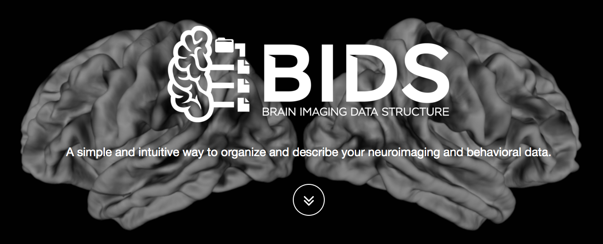

Cognition & Circuits
Neuroinformatics and Facilitating Analysis:
|
March 28, 2018
Samir Das
Software Manager
McGill Centre for Integrative Neuroscience
Montreal Neurological Institute

|

|

|
Dr. William Feindel


Today's talk
- The Basics
- Training
- Infrastructure
- Visualization
- Documentation
- Best practices in data sharing
- Data sharing initiatives
- Tools, datasets, and environments
- Open Science
Principle #1
Always backup your data!
Principle #2
Learn to Code
Understand Git (and Github)

|

|
Principle #3
Learn Statistics

Principle #4
Get involved
Get to know people.
Move outside of your environment.
Socialize.
Principle #5
Be nice!
Projects at the MNI
LORIS globally

|

|
|


|

|
|

|
|

|

|


|
|
Looking for Volunteer Experience?

Training


|

|

|


|
Infrastructure

LORIS - Key features

LORIS Dashboard

LORIS - CBRAIN Data Flow


|

|
CBRAIN projects

CBRAIN tasks


|

|


Visualization

|

|


|

|


|

|
Documentation


COBIDAS - Key points
- Experimental Design
- Acquisition Reporting
- Preprocessing Reporting
- Statistical Modeling and Inference
- Results Reporting
- Data sharing
- Reproducibility
Privacy Concerns


|
 Adrian Thorogood BIC lecture - March 9, 2016
Adrian Thorogood BIC lecture - March 9, 2016

|
Some Data Sharing solutions?
External Initiatives
INCF, Open Science Framework, NITRC, Allen Institute, NDAR, Open fMRI, Organization Human Brain Mapping, Human Brain Project, Compute Canada, Maelstrom, UK Biobank, Edinburgh BRAINS ImageBank, BRAIN, ENIGMA, Enhanced Nathan Kline Institute (1000 Functional Connectomes), LONI, GAAIN, COINS, XNAT, BrainSpell, VIP, SPM, BrainCode, FSL, FBIRN, Synapse, CIMA-Q, NeuroDevNet, GUSTO, QPN, The NeuroBureau, ABCD...
So many initiatives!


Cuba China Canada Axis

Artificial Intelligence

Consolidated datasets
ADNI, ICBM, NIHPD, Allen Mouse Brain, IBIS, Generation-R, ABIDE, ABIDE Preprocessed, ADHD 200, ADHD Preprocessed, Human Connectome Project, OMEGA, UK Biobank, Edinburgh Biobank, BigBrain, Talairach, 1000 Functional Connectomes, Colin 27, MNI 305, 1000 Brains, AAL, ANIMAL, MAVAN, PreventAD, PING, MNI 152, MNI 305, FSL...
So many datasets!
ADNI

|
|


|

|
Tools and Environments
Neurovault, NeuroSynth, CIVET, VIP, Boutiques, Git-Annex, SOLID, BIDS, NiDM, DiCAT, DCMTK, NiPype, ITK, Freesurfer, SPM, FSL, Mobile MRI, 1000 Brains, AAL, BrainCode, GitHub, Amazon Cloud, FSL, IDA, BrainVisa, DICOM Confidential, DockerHub, Datalad, Clowdr...
So many Tools!
|  |
Common Ontology for Imaging Data |
NeuroImaging Data Model

Format for storing metadata, provenance, processing information

Neurovault Example


Open Science

|

|
What's in it for me?
More citations (Piwowar & Vision, 2013)
Access to larger datasets
Greater exposure
Validation of your data
More collaborations
Increased funding


Free software foundation

|

|
Open Science Beers
Wednesdays at 4:44pm


|
Thank you!Acknowledgements: Alan Evans, Alex Zijdenbos, Dario Vins, Jonathan Harlap, Matt Charlet, Andrew Corderey, Sebastian Muehlboeck, Reza Adalat, Louis Collins, Vladimir Fonov, Marc Rousseau, Mia Petkova, Rathi Gnanasekaran, David Brownlee, Tarek Sherif, Pierre Rioux, Nic Kassis, Leigh MacIntyre, Claude Lepage, Ilana Leppert, Natasha Beck, Tristan Glatard, Bert Vincent, Lindsay Lewis, Najma Mahani, Elodie Portales-Casamar, Alden Woodward, Sylvain Milot, Jean Francois Malouin, Sylvain Baillet, Daniel Kroetz, Martin Weiss, Mathieu Desrosier, Jason Karamchandani, Amit Bar-Or, Ted Fon, John Brietner, Derek Lo, Patrick Bermudez, Chris Steele, Pamela Patterson and one of my favourites: Pierre Bellec! LORIS team on left (special thanks to Christine Rogers for listening to me.) |